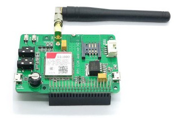

Developing Automated C2 H5OH Delivery Mechanisms with Programmable Microcomputers and an Interpretted ASCII Syntax
Drinking Beer With a Raspberry Pi and PHP
@AndrewCarterUK
What is a Raspberry Pi?
A teeny tiny computer
What Operating System?
Raspbian
Raspbian?
Based on Debian Linux
sudo apt-get install all-the-things
Electronics
A water analogy
Image from Olympia Circuits
Digital Logic
High or Low
On or Off
1 or 0
GPIO
General Purpose Input Output

Outputs
LEDs, Motors, LCDs, Valves
Inputs
Meters, Sensors, Buttons
Inputs and Outputs
 Image from itead.ccArduino
 Image from arduino.cc
Image from arduino.cc
A Raspberry Pi works like a normal computer
An Arduino is a microcontroller platform
Microcontrollers have more direct access to hardware
#define LED_PIN 13
void setup(void)
{
pinMode(LED_PIN, OUTPUT);
}
void loop(void)
{
digitalWrite(LED_PIN, HIGH);
delay(500);
digitalWrite(LED_PIN, LOW);
delay(500);
}
Top Tips
Create images of your SD cards
A cheap card off ebay isn't reliable long term storage
Assign a static IP address
$ ssh pi@192.168.0.2
...
$ ssh pi@192.168.0.3
...
$ ssh pi@192.168.0.4
...
$ ssh pi@192.168.0.5
...
Access Point Mode
Use hostapd to create private WiFi network
Gives easy control without requiring monitor
Useful travelling abroad
Be careful what you plug where
Observe voltage and current requirements
5V and 3.3V are commonly used in digital electronics
5V is not 3.3V
Resistors reduce current flow
A red LED has a voltage drop of 1.8V
Rasperry Pi pins use 3.3V
That leaves 1.5V for the resistor
Current rating of 20mA for LED
Ohms Law: V = IR
1.5V ÷ 0.02A = 75Ω resistor
PROGRAMMING TIME
Serial
USB, RS232, RS485, UART
A volunteer please?
:)
00111010 00101001
Internal clock required
Must agree baud rate and protocol prior
Raspberry Pi Theft Protection System
composer require piphp/gpio
use PiPHP\GPIO\GPIO;
use PiPHP\GPIO\Pin\PinInterface;
// Create a GPIO object
$gpio = new GPIO();
// Retrieve pin 18 and configure it as an output pin
$pin = $gpio->getOutputPin(18);
// Set the value of the pin high (turn it on)
$pin->setValue(PinInterface::VALUE_HIGH);
use PiPHP\GPIO\GPIO;
use PiPHP\GPIO\Pin\InputPinInterface;
$gpio = new GPIO();
$pin = $gpio->getInputPin(18);
$pin->setEdge(InputPinInterface::EDGE_BOTH);
$interruptWatcher = $gpio->createWatcher();
$interruptWatcher->register($pin, function ($pin, $value) {
echo 'Pin ' . $pin->getNumber() . ' changed to: ' . $value . PHP_EOL;
return true;
});
while ($interruptWatcher->watch(5000));
Interrupt Top Tip
Keep them as light as possible
Record the event
Exit
Drinks Machine
Any questions?
@AndrewCarterUK